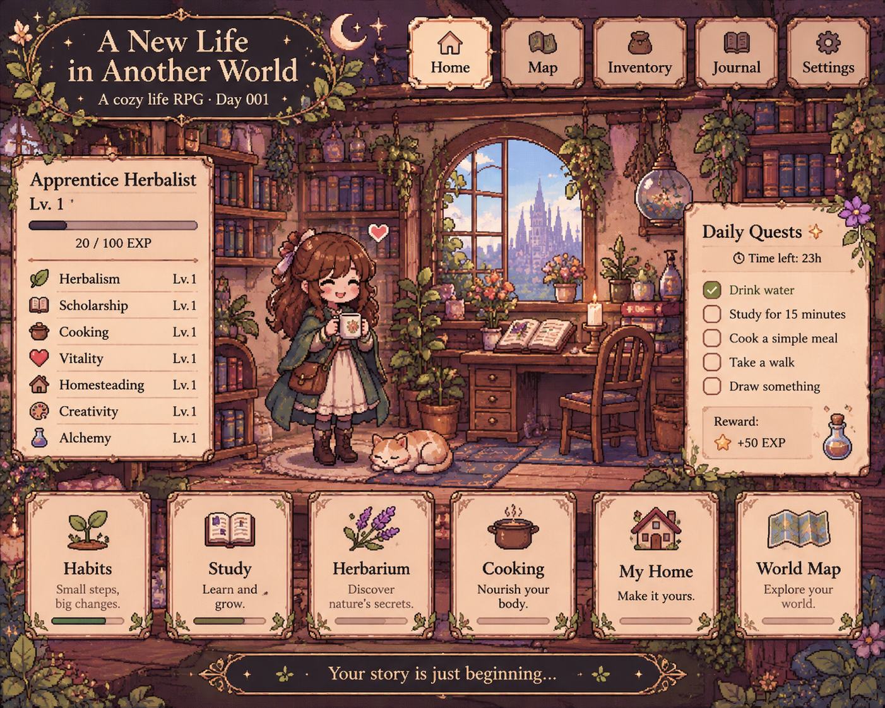

Bienvenida a tu nueva vida.
Aquí comienza una aventura más tranquila. Cultiva hierbas, reúne conocimientos, cocina algo rico y avanza misión a misión. No hay prisa, pequeña aventurera.
Pequeñas misiones de hoy
Lugares por explorar
Tu pequeño refugio
🪴🧪
Una nota para hoy
«No necesitas transformar toda tu vida en un solo día. Basta con plantar una semilla».
Misiones de la aventurera
No hay una única forma de avanzar. Las misiones diarias acompañan tu rutina; las aventuras especiales celebran lo que haces una vez; y el diario de tropiezos te ayuda a comprenderte, nunca a castigarte.
🌤️ Misiones de hoy
📝 Lista de tareas · Encargos del refugio
🧭 Misiones generales
✨ Aventuras especiales
🌧️ Diario de tropiezos
Procrastinar, pasar demasiado tiempo con el móvil, comer por ansiedad, dejar algo a medias o tener poca energía no te convierte en un fracaso. Puedes escribirlo para entender qué necesitabas y qué podría ayudarte mañana.
«En este mundo no tienes que demostrar que mereces avanzar. Cada pequeño paso cuenta, y descansar también forma parte de la aventura».
Tu personaje
Toda aventurera empieza en algún lugar. Elige el nombre y el aspecto de tu pequeña heroína cotidiana.
Ficha de aventurera
Tu personaje is a symbol of your journey, not a measure of your worth. You can change your look whenever you like.
Mi pequeño hogar
Un cottage acogedor dentro de tu propio mundo: un refugio de madera, plantas, libros, velas y rincones que cuentan tu historia. Cada estancia tendrá sus propios objetos, actividades y pequeños proyectos.

✦ Tu refugio · Tu lugar seguroEl espíritu del cottage
Un hogar vivido, no una casa perfecta: madera oscura, textiles cálidos, cerámica, estanterías llenas, plantas en las ventanas, lluvia en los cristales y luz de velas al anochecer.
Mi ciudad · Barcelona
Un atlas personal para recorrer Barcelona a tu ritmo: los lugares de siempre, los rincones que te esperan y los recuerdos que iremos guardando.
Atlas de la aventurera
🏡 Fort Pienc · tu zona de refugio
🌆 Glòries
🍵 Urquinaona
❤️ Sants
⚓ Puerto y Barceloneta
🖤 Otros lugares por ubicar
Cada zona tendrá su propio registro de visitas, lugares descubiertos y recuerdos. Los sitios sin marcador aparecerán aquí hasta que fijemos su posición exacta.